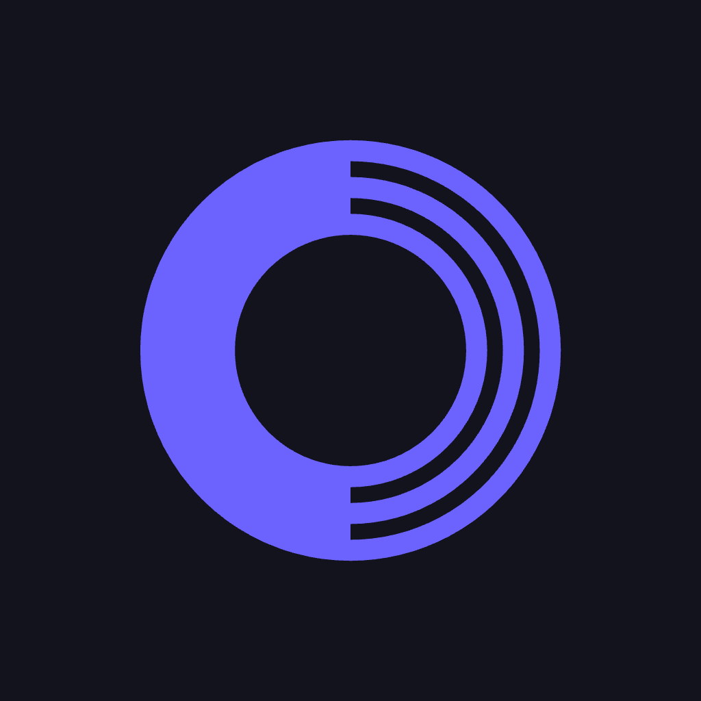
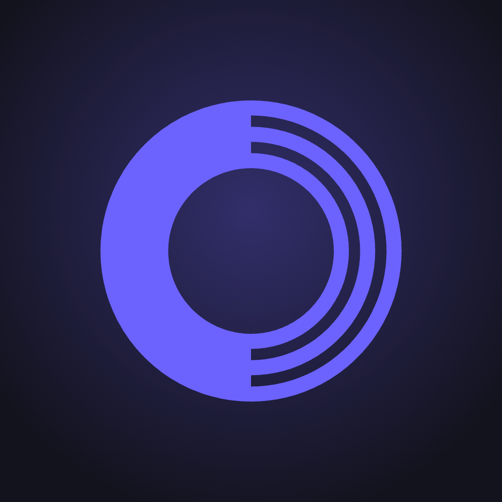
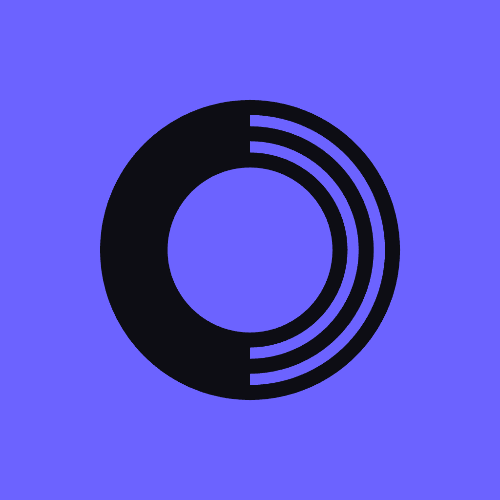
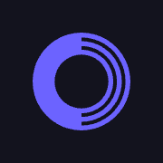
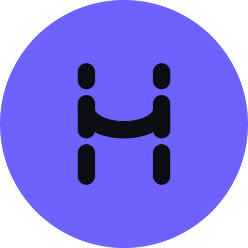

Habits — logo assets
Mark B3 · monogram A3
Every file below is in the project's logo/ folder and previewed from the real export, so what you see here is what you'd ship. Each form ships twice: a currentColor cut for inlining into markup, where CSS color drives it, and an indigo cut for use in an <img> tag, which can't inherit color.
The two forms
The mark
One ring, two natures — a solid band for the body, three light bands for the mind. Carries the app icon, the favicon, the splash, and the header lockup.
The monogram
An H whose stems break into three plates each — the same segmented construction as the mark. For avatars, loading states, share cards, anywhere an initial beats a symbol.
App icon · pick one ground



Flat · recommended Glow ReversedRounded corners shown here for preview only — the source PNGs are full-bleed squares, which is what iOS and the App Store require. They apply the mask themselves; a pre-rounded source gets double-rounded.
Small sizes, from the real files

180 touch
AvatarRules worth keeping
Reduction
Full mark at 48px and above — below that its thin bands land on less than a pixel. Everything smaller, including the header lockup, takes habits-mark-small.svg: two bands instead of four. Same rule for the monogram.
Clear space
Keep a quarter of the mark's width clear on all sides. In the icon the mark already sits at 90% of the canvas — don't inset it further.
Lockup
Mark at cap height of the wordmark, gap equal to half the mark's width. At header sizes that means the reduced cut. Mark in #6c63ff, wordmark in #e4e4f4.
Don't
Don't rotate it, outline it, put it on a photograph, or recolor it into the semantic palette — red and green mean something else in your app.
Drop-in markup
<link rel="icon" href="/logo/favicon.svg" type="image/svg+xml"> <link rel="icon" href="/logo/png/favicon-32.png" sizes="32x32"> <link rel="apple-touch-icon" href="/logo/png/apple-touch-icon-180.png">
Lockups · Instrument Sans Regular
Where the full spec lives
Construction ratios, clear space, the reduction threshold, color specs, misuse and the complete file index are in Habits Logo — Brand Guidelines, which prints to a four-page PDF.